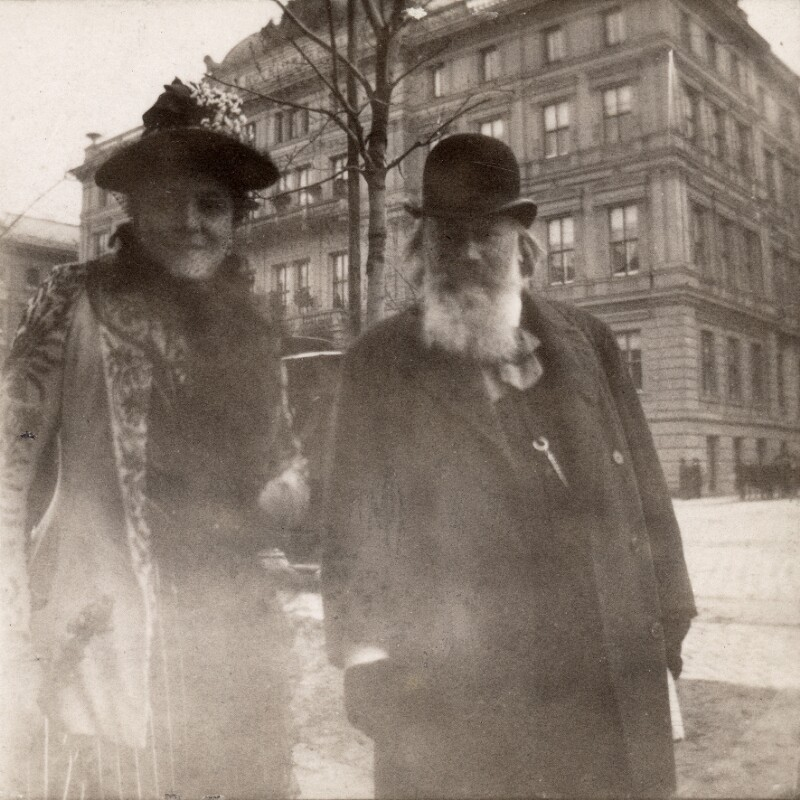
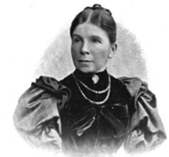
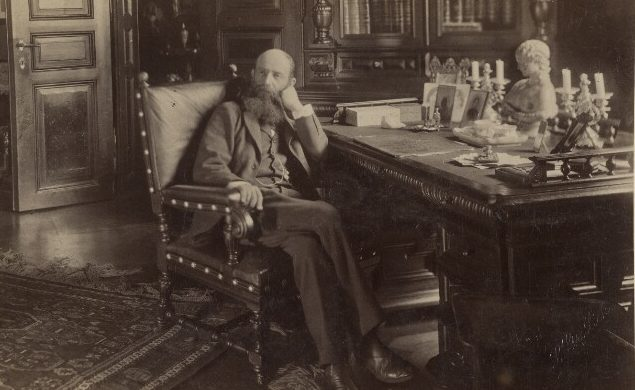
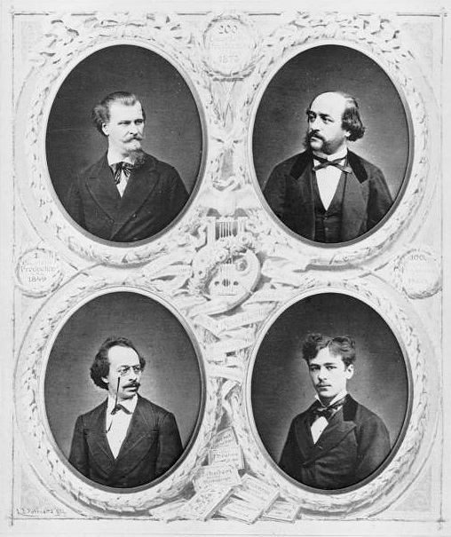
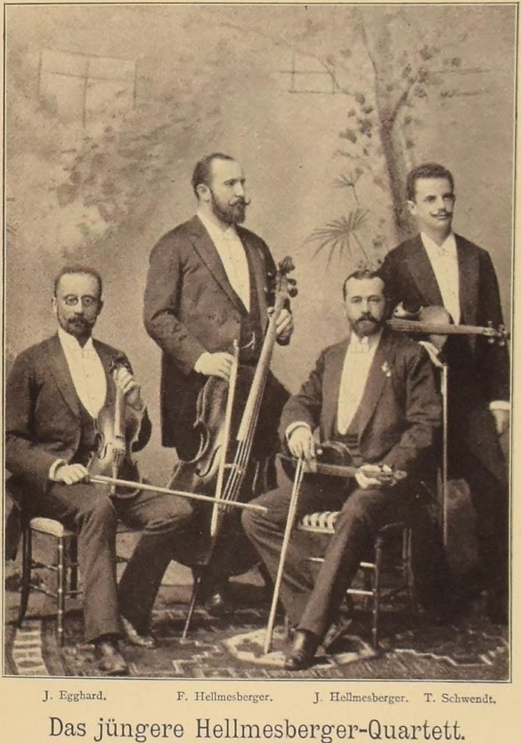
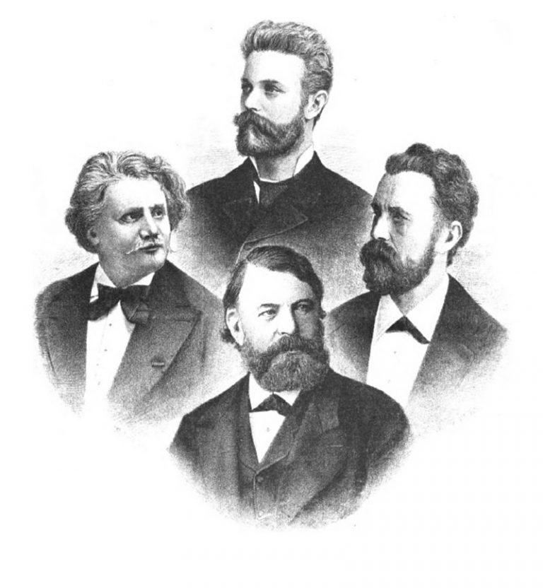
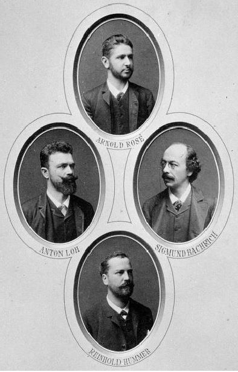
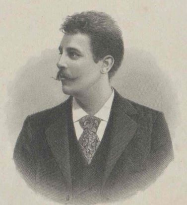
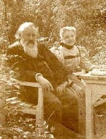
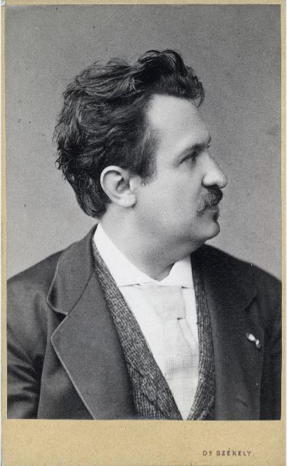

Brahms-Interpret*innen
Ähnlich wie für Franz Schubert, dessen Lieder durch den Sänger Joseph Michael Vogl erst so richtig populär wurden, finden sich auch bei Brahms Künstler, die sich mehr als andere in den Dienst seiner Musik gestellt haben. Ohne Anspruch auf Vollständigkeit seien hier einige von ihnen in alphabetischer Reihenfolge näher vorgestellt.
Alice Barbi (1858–1948)
Zunächst als Violinistin erfolgreich, begann Alice Barbi mit 20 Jahren eine Gesangsausbildung. Ihr Debüt als Sängerin gab sie am 2. April 1882, kurz darauf folgte ein Konzert in Rom vor der italienischen Königin unter der Leitung des Komponisten Giovanni Sgambati. Erfolgreiche Konzertreisen als königliche italienische Hofsängerin führten sie ab 1884 auch außerhalb Italiens, wobei sie in Wien erstmals 1889 auftrat. Hier etablierte sie sich rasch als Brahms-Sängerin par excellence.
Krönung ihrer Wiener Karriere, welche dank ihres Engagements im Rahmen von Wohltätigkeitskonzerten auch nach ihrer Vermählung mit Baron Wolff-Stomersee nie gänzlich zum Erliegen kam, war mit Sicherheit ihr Abschiedskonzert am 21. Dezember 1893, bei dem Brahms sie am Klavier begleitete. Alice Barbi engagierte sich aber auch nach Brahms‘ Tod für dessen Musik, wovon zahlreiche Wohltätigkeitskonzerte (meist reine „Brahms-Abende“) genauso zeugen wie die Tatsache, dass sie die Erste war, die ihren Konzerterlös für die Errichtung eines Brahms-Denkmals spendete. Dieses Denkmal, das heute im Resselpark steht, ist also nicht zuletzt auch eine Erinnerung an die „große“ Alice Barbi und ihre Verehrung für Johannes Brahms.

Alice Barbi und Brahms vor dem Hotel Imperial, 1892 © ÖNB
Marie Baumayer (1851–1931)
Marie Baumayer kam 1871 nach Wien, wo sie am Konservatorium der Gesellschaft der Musikfreunde Klavier als Hauptfach in der Klasse von Julius Epstein studierte. Neben der Familie Wittgenstein war es Johannes Brahms, der sie förderte und auch freundschaftlich mit ihr verbunden war. Einer ihrer größten Erfolge war die Grazer Erstaufführung des Brahms’schen Klavierkonzerts Nr. 2 B-Dur, op. 83 am 5. November 1882. Dem Brahms-Biograph Max Kalbeck zufolge sei sie die erste gewesen, „die es wagen durfte, das B-dur-Konzert öffentlich zu spielen, ohne befürchten zu müssen, daß, wie bei einer minder glücklichen Rivalin, der gereizte Meister sich dafür mit dem zweideutigen Kompliment bedankte, er werde nun ein drittes, noch schwereres Klavierkonzert komponieren müssen, das von keinem Frauenzimmer gespielt werden könnte.“ (Kalbeck, Bd. IV, 21915, S. 31 f.).
Ihrem Ruf als Brahms-Interpretin wurde Marie Baumayer auch nach Brahms‘ Tod gerecht, wobei ein Rezensent der Neuen Zeitschrift für Musik sogar von einem „Brahms-Cultus“ (NZfM 1900, S. 106) sprach, den die Künstlerin pflege. Zu ihren bevorzugten Kammermusikpartnern zählten denn auch – wenig überraschend – InterpretInnen, die ebenfalls dem Brahms-Kreis angehörten, darunter die Violinistin Marie Soldat-Roeger, deren Damenstreichquartett, der Cellist Robert Hausmann, der Klarinettist Richard Mühlfeld sowie das Hellmesberger- und das Rosé-Quartett.

© Sophie Drinker Institut
Ignaz Brüll (1846–1907)
Als Zehnjähriger wurde Ignaz Brüll Schüler des berühmten Pianisten Julius Epstein, sein Debüt gab er mit 13 und bereits zwei Jahre später wurde sein 1. Klavierkonzert uraufgeführt. Ab da war Ignaz Brüll ein bekannter Name im Musikgeschehen seiner Zeit. 1872 begann er als Lehrer an der renommierten Wiener Klavierschule Horak, deren Mitdirektor er 1881 wurde. In den 1890er Jahren wandelte sich sein Repertoire; ab diesem Zeitpunkt trat er fast ausschließlich als Interpret neuer Werke von Carl Goldmark, Johannes Brahms (Uraufführung der Klavierstücke op. 76, op. 116, Nr. 1–3, op. 117, Nr. 1 und 2 sowie op. 119, Nr. 2) sowie eigener Kompositionen in Erscheinung.

In seinem Heim Liechtensteinstr. 4, 9. Bezirk, 1892 © ÖNB / Grillich
Doch nicht nur Brülls pianistische Qualitäten wurden geschätzt, sondern auch und vor allem seine menschlichen. So zählten etwa Carl Goldmark, Robert Fuchs, Eusebius Mandyczewski, Eduard Hanslick, Gustav Mahler, Theodor Billroth und nicht zuletzt Johannes Brahms zu seinem großen Freundeskreis. War er für Max Kalbeck der „Brahms-Pianist par Excellence“, so urteilte dieser gar über den liebevoll „Nazi“ titulierten Freund: „Wie etwas klingt, was ich gemacht habe, weiß ich erst, wenn ich’s von Brüll gehört habe.“ (https://kulturportal-west-ost.eu/biographien/brull-ignaz-2)
Hellmesberger-Quartett

Im Jahr 1873: Joseph Hellmesberger senior (r. o.), Joseph Hellmesberger junior (r. u.), Heinrich Röver (l. o.) und Sigismund Bachrich (l. u.) © Wikipedia
1849 von Josef Hellmesberger senior gegründet, wurde dieses Streichquartett geradezu zum Synonym der Wiener Geigentradition in der Nachfolge Joseph Böhms und Ignaz Schuppanzighs. Einer der Gründe für diese Dominanz war mit Sicherheit der Tatsache geschuldet, dass das Hellmesberger-Quartett über lange Phasen hinweg das einzige regelmäßig konzertierende Ensemble in Wien war. Der Bedarf an Kammermusikdarbietungen war bis in die 1880er Jahre so gering, dass dieser neben dem fixen Hellmesberger-Zyklus problemlos durch gastierende Vereinigungen wie dem „Laub-Quartett“, Jean Beckers „Florentiner Quartett“ oder dem „Joachim-Quartett“ gedeckt werden konnte.

Um 1898 © A. Ehrlich, Das Streichquartett in Wort und Bild 1898, S. 17.
Eine Konstante der im Laufe der Jahre mehrmals wechselnden Besetzung war die Beteiligung eines oder mehrerer Mitglieder der Familie Hellmesberger, wobei nach dem Ausscheiden des Gründers dessen Sohn Josef Hellmesberger junior die Rolle des Primarius übernahm.
Die Programme waren größtenteils so aufgebaut, dass zwischen zwei Streichquartette ein anderweitig besetztes Werk (Klaviertrio, Streichsextett, Violinsonate etc.) eingefügt wurde. Dafür wurden so namhafte KünstlerInnen gewonnen wie Julius Epstein, Alfred Grünfeld, Moriz Rosenthal, Anton Rubinstein oder Clara Schumann. Johannes Brahms feierte gar sein Debüt in Wien am 16. November 1862 im Rahmen eines Kammermusikabends des Hellmesberger-Quartetts mit der Aufführung seines Klavierquartetts g-Moll, op. 25.
War mit dem Ausscheiden des Ensemblegründers eine deutliche Qualitätseinbuße zu verzeichnen, wurde die Konzerttätigkeit mit der Ernennung Josef Hellmesbergers jun. im Jahr 1901 zum Hofkapellmeister nicht mehr fortgesetzt. Das seit 1883 bestehende Rosé-Quartett übernahm damit endgültig die Position der alleinigen Quartett-Größe und Hüterin der Kammermusiktradition in Wien.
Joachim-Quartett

1884: Heinrich de Ahna (l.), Robert Hausmann (o.), Emanuel Wirth (r.), Joseph Joachim (u.) © Wikipedia
1869 von dem Violinvirtuosen und Brahms-Freund Joseph Joachim gegründet, wurde diese Quartettformation, die bis zu Joachims Tod 1907 bestand, zu einem der Hauptrepräsentanten deutscher Musikkultur im späten 19. und frühen 20. Jahrhundert. Die Besetzung erlebte zwar einige Wechsel, die Qualität blieb aber dank Joachims Führung stets auf unumstritten hohem Niveau.
- 1. Violine: Joseph Joachim
- 2. Violine: Ernst Schiever (1869–1872), Heinrich de Ahna (1872–1892), Johann Kruse (1892–1897), Carl Halir (1897–1907)
- Viola: Heinrich de Ahna (1869–1872), Eduard Rappoldi (1872–1877), Emanuel Wirth (1877–1906), Karl Klingler (1906–1907)
- Violoncello: Wilhelm Müller (1869–1879), Robert Hausmann (1879–1907)
Auf Programmen des Joachim-Quartetts fehlte ein Komponist selten: Johannes Brahms. Joachim trat von Beginn an für die Werke seines Freundes ein und durfte u.a. die Streichquartette op. 51, Nr. 2 und op. 67 zur Uraufführung bringen.
Rosé-Quartett

Um 1884 © ÖNB
„nur für das Rosé-Quartett und auf Wunsch von Herrn Hummer“, so heißt es von Brahms in einer handschriftlichen Anmerkung am Rand des Blatts der 1. Violine seines Streichquintett op. 111 (Quelle: Styra Avins / Josef Eisinger: Sechs unveröffentlichte Briefe von Brahms. Aus: Brahms-Studien Band 13, 2002). Damit erlaubte er den Streichern bei der Uraufführung seines Streichquintetts am 11. November 1890 im Salon Bösendorfer, die Anfangstakte piano statt dem geforderten forte zu spielen, um die Stimme des Cellisten Reinhold Hummer besser hervortreten zu lassen – ein Zugeständnis, das von Brahms‘ hoher Wertschätzung für das Rosé-Quartett zeugt.
1882 von Arnold Rosé (geborener Rosenblum) und seinem Bruder Eduard in Wien gegründet, konzertierte dieses Ensemble erstmals am 22. Jänner 1883, das letzte Konzert fand 1945 in der Londoner Emigration statt. Die Besetzung wechselte im Lauf der Zeit etliche Male:
- 1. Violine: Arnold Rosé (1882–1945)
- 2. Violine: Julius Egghard d. J. (1882–1883), Anton Loh (1884–1889), August Siebert (1890–1896), Albert Bachrich (1897–1904), Paul Fischer (1905–1938)
- Viola: Anton Loh (1882–1883), Sigismund Bachrich (1884–1894), Hugo von Steiner (1895–1901), Anton Ruzitska (1901–1929), Max Handl (1930–1933), Julius Stwertka (1934–1938)
- Violoncello: Eduard Rosé (1882–1883), Reinhold Hummer (1884–1900), Friedrich Buxbaum (1901–1920 und 1922–1945), Anton Walter (1921)
Beginnend mit der Saison 1882/1883 waren Brahms‘ Werke auf den Programmen des Rosé-Quartetts stets gut vertreten und Brahms selbst brachte gemeinsam mit dem Klarinettisten Richard Mühlfeld seine Spätwerke, die beiden Klarinettensonaten op. 120, im Rahmen von Kammermusikabenden des Rosé-Quartetts zur Uraufführung (Nr. 1: 11. Januar 1895, Nr. 2: 8. Januar 1895).
Anton Sistermans (1865–1926)

© ÖNB
Der niederländische Bariton galt neben Gustav Walter, Johannes Messchaert und Raymund von Zur Mühlen (alle drei Schüler des „Vaters des Liederrezitals“ Julius Stockhausen) als einer der bedeutendsten Liedersänger seiner Zeit. Er war zwar kein in Wien ansäßiger Sänger, konnte sich aber bei seinen regelmäßigen Gastauftritten insbesondere als Brahms-Interpret etablieren, wobei er auch zahlreiche von dessen Liedern zur Uraufführung brachte, darunter die Vier ernsten Gesänge, op. 121 am 9. November 1896 im Saal Bösendorfer.
Welcher Komponist Anton Sistermans‘ (Lieder-)Herzen am nächsten stand offenbart ein Blick auf dessen Aufnahmen, wo ausschließlich Lieder eines einzigen Komponisten verewigt wurden: Johannes Brahms.
Marie Soldat-Roeger (1863–1955)

© Maria Fellinger
1874 feierte Marie Soldat ihr Debüt als Violinistin, 1879 lernte sie Brahms in Pörtschach kennen, der sie an seinen Freund Joseph Joachim in Berlin empfahl, wo sie bis 1889 an der Königlichen Hochschule für Musik studierte. Sie war 1885 die erste Frau, die Brahms‘ Violinkonzert D-Dur, op. 77 spielte – und sollte für viele Jahre auch die einzige Frau bleiben, die sich an dieses Werk heranwagte.
1895 debütierte im Bösendorfer-Saal ein von ihr gegründetes Damen-Streichquartett (Marie Soldat-Roeger: 1. Violine, Ella Finger-Bailetti bzw. ab 1898 Elsa Edle von Planck: 2. Violine, Natalie Bauer-Lechner: Viola und Lucy Herbert-Campbell bzw. ab 1903 Leontine Gärtner: Violoncello), mit dem sie auch häufig Werke von Brahms aufführte. Sie sollte übrigens auch die letzte Künstlerin sein, die Brahms spielen hörte: am 21. März 1897, also nur wenige Tage vor seinem Tod, besuchte Brahms eine private Musikdarbietung des Soldat-Roeger-Damen-Streichquartetts gemeinsam mit dem Klarinettisten Richard Mühlfeld. Statt des ursprünglich geplanten Brahms’schen Klarinettenquintetts soll dabei auf Brahms‘ eigenen Wunsch hin Carl Maria von Webers B-Dur-Klarinettenquintett gespielt worden sein – Argument: sein eigenes Werk habe er schon oft genug gehört... (http://marketsquareconcerts.blogspot.com/2019/07/)
Gustav Walter (1834–1910)

© Josef Székely, ÖNB
Der aus Böhmen stammende lyrische Tenor war von seinem Debüt 1856 an der Wiener Hofoper bis zu seinem Rücktritt 1887 ein gefeierter Publikumsliebling. Neben seiner Opernkarriere etablierte sich Walter auch als Liedsänger, der insbesondere mit Werken von Schubert, Dvořák und Brahms reüssieren konnte.
Gustav Walter zählte nicht nur zu Brahms‘ Freundeskreis, sondern brachte auch eine Reihe von dessen Vokalwerken zur Uraufführung, wie zum Beispiel:
- „Rinaldo“ op. 50 (28. Februar 1869, Großer Redoutensaal der Wiener Hofburg, Leitung: Johannes Brahms)
- „Liebeslieder-Walzer“ op. 52 (5. Januar 1870, Kleiner Redoutensaal, Mitwirkende: Brahms und Clara Schumann am Klavier sowie Louise Dustmann-Meyer, Rosa Girzick und Emil Krauss)
- „Feldeinsamkeit“ op. 86, Nr. 2 (23. Februar 1883, Saal Bösendorfer; Klavier: Brahms).